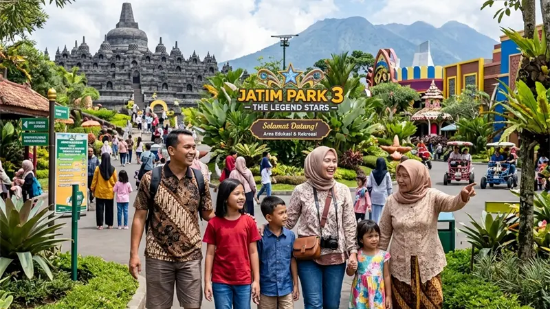

Destinasi baru Batu untuk liburan keluarga 2026 mencakup agrowisata, taman edukasi anak, dan kawasan alam terbuka yang dirancang ramah untuk berbagai usia dalam satu rombongan.
- Destinasi keluarga baru di Batu umumnya menggabungkan unsur edukasi dan rekreasi dalam satu lokasi.
- Fasilitas ramah anak seperti area bermain dan tempat teduh menjadi pertimbangan utama.
- Sebagian destinasi juga menyediakan area duduk dan akses lebih landai yang membantu wisatawan lansia.
- Kunjungan pada hari kerja umumnya lebih nyaman dibandingkan akhir pekan karena kepadatan pengunjung lebih rendah.
Destinasi Baru Batu Apa yang Cocok untuk Anak Kecil?
Destinasi baru Batu yang cocok untuk anak kecil adalah lokasi dengan area bermain outdoor, wahana edukasi hewan atau tanaman, dan akses jalan yang relatif datar serta aman.
Anak-anak usia dini umumnya lebih nyaman di destinasi yang menawarkan interaksi langsung, seperti agrowisata petik buah, kebun sayur edukatif, atau taman dengan area bermain berbahan aman. Orang tua disarankan memilih destinasi yang memiliki pagar pembatas jelas di area dekat jurang atau kolam, mengingat sebagian kawasan wisata baru di Batu memanfaatkan kontur perbukitan yang tidak seluruhnya rata.
Apa Fasilitas yang Perlu Dicek Sebelum Membawa Keluarga ke Destinasi Baru Batu?
Fasilitas yang perlu dicek sebelum membawa keluarga ke destinasi baru Batu meliputi ketersediaan toilet, mushola, tempat makan, dan area parkir yang memadai untuk kendaraan keluarga.
Karena destinasi baru sering kali masih dalam tahap pengembangan, fasilitas pendukung belum tentu selengkap destinasi wisata utama yang sudah lama beroperasi. Wisatawan disarankan mengecek ulasan atau media sosial resmi pengelola untuk memastikan ketersediaan fasilitas dasar tersebut, terutama jika membawa anggota keluarga dengan kebutuhan khusus seperti lansia atau balita.
Apakah Destinasi Baru Batu Ramah untuk Lansia?
Sebagian destinasi baru Batu ramah untuk lansia, terutama yang memiliki akses jalan landai, area duduk yang cukup, dan jarak tempuh jalan kaki yang tidak terlalu jauh dari area parkir.
Namun, tidak semua destinasi baru memiliki kontur yang landai karena banyak kawasan wisata Batu berada di area perbukitan. Sebelum berkunjung, keluarga yang membawa anggota lansia sebaiknya menghubungi pengelola destinasi terlebih dahulu untuk memastikan kondisi akses jalan dan ketersediaan tempat istirahat di sepanjang area kunjungan.
Bagaimana Merencanakan Kunjungan Keluarga ke Destinasi Baru Batu?
Merencanakan kunjungan keluarga ke destinasi baru Batu dapat dilakukan dengan menentukan satu destinasi utama, mengecek jam operasional, dan menyiapkan waktu tempuh tambahan karena sebagian lokasi berada di jalur yang belum terlalu ramai penunjuk arah.
Sebaiknya keluarga memilih satu atau dua destinasi utama dalam satu hari kunjungan agar tidak terburu-buru, mengingat sebagian jalur menuju destinasi baru masih berupa jalan desa yang lebih sempit dibandingkan jalan utama kota. Menyediakan camilan, air minum, dan obat-obatan pribadi juga penting karena tidak semua destinasi baru memiliki minimarket di sekitar lokasi.
Menurut data pariwisata yang secara umum dipublikasikan pemerintah daerah, segmen wisata keluarga menjadi salah satu kontributor kunjungan wisatawan terbesar di Kota Batu sepanjang periode libur sekolah dan libur nasional.
FAQ
Destinasi baru Batu apa yang paling cocok untuk anak balita?
Destinasi dengan area bermain outdoor yang aman dan akses jalan datar umumnya lebih cocok untuk anak balita dibandingkan destinasi dengan medan perbukitan curam.
Apakah destinasi baru Batu buka setiap hari?
Jam operasional bervariasi antar destinasi, sehingga disarankan mengecek informasi terbaru melalui media sosial resmi pengelola sebelum berkunjung.
Apakah perlu reservasi sebelum berkunjung ke destinasi baru Batu?
Sebagian destinasi baru, terutama yang berskala kecil, tidak mewajibkan reservasi, namun beberapa destinasi dengan kapasitas terbatas dapat memerlukan pemesanan tiket lebih awal saat musim liburan.
Arya
Siswa Skariga yang sedang belajar di Gm Academy.